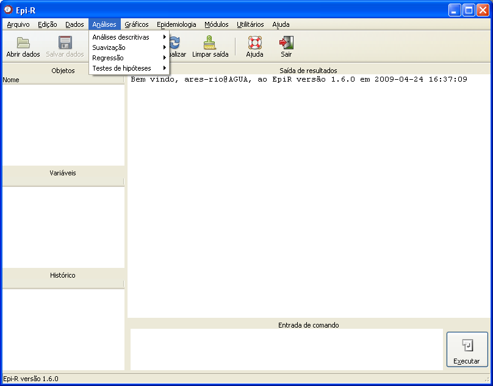

Menu Análises
Menu Análises

Figura 1. Menu Análises.
Figura 1. Menu Análises.
Para obter informações detalhadas sobre a função desejada, clique em um dos links abaixo:
Análises descritivas
Suavização
Regressão
Testes de hipóteses